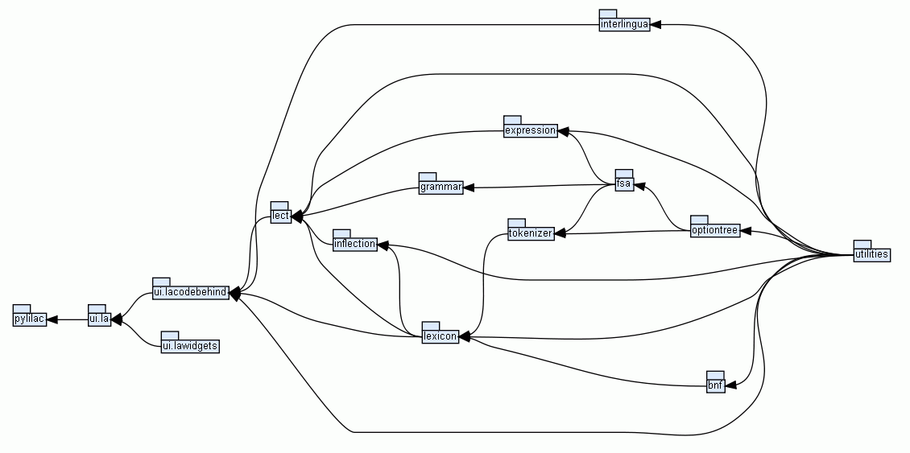

|
| Package Tree for pylilac |
| Home | Trees | Indices | Help |
|
|---|
|
|
|  |
| Import Graph |
|
|
| Package Tree for pylilac |
See Also: BerliOS project site.
Author: Paolo Olmino
License: GNU GPL GNU General Public License
Version: Alpha 0.1.6
| Submodules | |
| |
| Functions | |||
|
|||
Imports: pylilac.ui.la.LAApp, pylilac.core, pylilac.ui
| Function Details |
See Also:
|
| Home | Trees | Indices | Help |
|
|---|
| Generated by Epydoc 3.0beta1 on Thu Aug 27 20:13:34 2009 | http://epydoc.sourceforge.net |